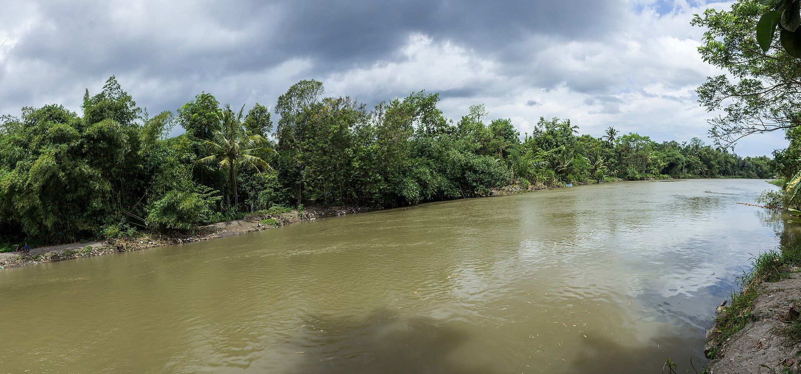
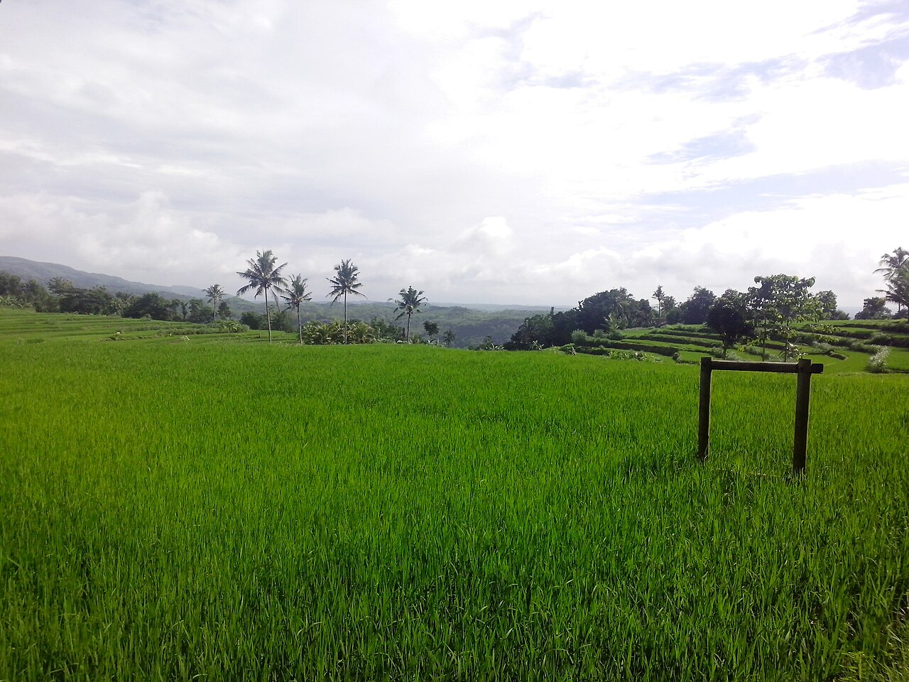
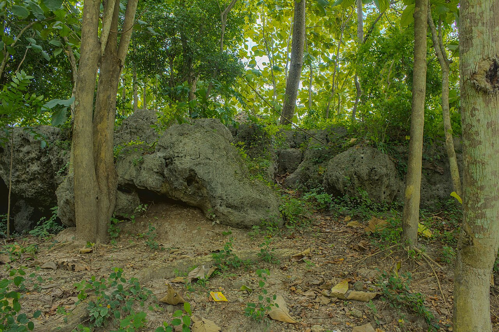

Padukuhan Puton · Trimulyo · Jetis · Bantul
Selamat datang di Padukuhan Puton
Rumah bagi warga di tepi Kali Opak—tempat sawah dan pekarangan dirawat bersama, dan kisah Watu Ngelak dijaga dari generasi ke generasi.
Kali Opak di Puton. Foto: Crisco 1492 / CC BY-SA 3.0.
1.818
Jiwa
505
Kepala keluarga
8
Rukun tetangga
1
Situs budaya
Sambutan warga
Sambutan Dukuh

Padukuhan ini bukan hanya tempat tinggal. Ia adalah rumah bersama yang kita rawat setiap hari.
Assalamu’alaikum warahmatullahi wabarakatuh. Sugeng rawuh ing Padukuhan Puton.
Puton tumbuh dari kebersamaan warga: dari sawah yang digarap bersama, posyandu yang berjalan tiap bulan, sampai anak-anak muda yang menggerakkan kegiatan kampung. Semua itu kami rawat dengan cara sederhana—saling menolong dan menjaga lingkungan tetap nyaman untuk ditinggali.
Melalui website ini, kami ingin membuka pintu bagi siapa pun yang ingin mengenal Puton: warga, perantau, maupun tamu yang datang membawa rasa ingin tahu. Semoga informasi di sini bermanfaat dan mempererat hubungan kita semua.
Matur nuwun.
Suryanto
Dukuh Puton
Profil
Padukuhan di tepi Kali Opak
Puton adalah satu dari 12 padukuhan di Kalurahan Trimulyo, Kapanewon Jetis, Bantul. Wilayahnya tumbuh di antara sawah, pekarangan, dan aliran Kali Opak.
Deskripsi wilayah
Kehidupan warga Puton bertumpu pada pertanian, peternakan, usaha rumahan, dan wisata berbasis masyarakat. Padi menjadi tanaman utama, sementara durian dan jeruk nipis dari pekarangan ikut menjadi komoditas bernilai. Keberadaan Desa Wisata Puton Watu Ngelak membuka ruang bagi warga untuk mengelola kunjungan dengan tetap menjaga suasana kampung.
Jaraknya sekitar 15 kilometer ke arah selatan dari pusat Kota Yogyakarta. Permukiman warga terhubung oleh jalan kampung, dengan Kali Opak sebagai batas alami di sisi barat dan hamparan sawah yang masih menjadi bagian dari keseharian.
Gambaran umum
- Bentang alam
- Permukiman warga, sawah, tegalan, dan pekarangan, dengan Kali Opak mengalir di sisi barat.
- Mata pencaharian
- Pertanian, peternakan, usaha rumahan, dan wisata berbasis masyarakat.
- Hasil bumi
- Padi, durian, jeruk nipis, serta hasil pekarangan dan kebun warga.
- Akses
- Sekitar 15 km ke selatan dari pusat Kota Yogyakarta, terhubung jalan kampung dan jalan kalurahan.
Padukuhan Puton, Trimulyo, Jetis, Bantul
Peta dapat digeser dan diperbesar.
Buka di Google Maps
Struktur padukuhan
Perangkat padukuhan bekerja bersama RT dan lembaga warga untuk menjalankan pelayanan dan kegiatan sehari-hari.
Infografis
Padukuhan dalam angka
Gambaran kependudukan Padukuhan Puton: jumlah warga, keluarga, dan sebaran usia.
1.818
Jiwa
505
Kepala keluarga
8
Rukun tetangga
Jenis kelamin
Perbandingan jumlah warga laki-laki dan perempuan.
1.818
jiwa
- Laki-laki89649,3%
- Perempuan92250,7%
Kelompok umur
Sebaran warga berdasarkan rentang usia.
Data kependudukan Padukuhan Puton, 2025. Angka dibulatkan dan diperbarui berkala oleh perangkat padukuhan.
Potensi wisata
Watu Ngelak
Sebuah batu besar di tepi Kali Opak yang menyimpan kisah perjalanan Sultan Agung—dan menjadi pintu masuk warga Puton untuk mengembangkan wisata berbasis masyarakat.

“Watu Ngelak berarti batu yang haus.”
Menurut cerita yang diwariskan warga, Sultan Agung Hanyakrakusuma berhenti di bebatuan ini dalam perjalanan dari Kraton Pleret menuju Laut Selatan. Saat merasa haus, ia diberi minum air kelapa oleh seorang anak yang sedang mencari ikan. Sejak itu, batu besar tersebut dikenal sebagai Watu Ngelak.
Permukiman di sekitarnya kemudian disebut Puton, dari kata putu yang berarti cucu—merujuk pada anak yang memberi minum Sultan Agung. Kisah ini hidup dalam tutur warga dan menjadi bagian dari identitas Padukuhan Puton hingga hari ini.
Kini kawasan Watu Ngelak dikelola bersama Pokdarwis dan warga. Pengunjung dapat menyusuri petilasan, menikmati aliran Kali Opak, mencoba kolam pemancingan, atau sekadar duduk menikmati kuliner kampung.
Buka lokasi di Google MapsMenyusuri petilasan
Berjalan mendekati batu besar dan mendengar cerita yang dijaga warga dari generasi ke generasi.
Menikmati Kali Opak
Susur sungai atau duduk di tepi aliran yang membatasi Puton dan wilayah sekitarnya.
Kuliner & pemancingan
Kolam pemancingan dan sajian kampung untuk mengisi jeda perjalanan.
Mampir ke Watu Ngelak
Berada di Padukuhan Puton, sekitar 15 km dari pusat Kota Yogyakarta. Buka rute, lalu ikuti petunjuk menuju Desa Wisata Puton.
Dikelola Pokdarwis Desa Wisata Puton Watu Ngelak bersama warga.
Lembaga & kelompok
Warga yang bergerak bersama
Tiga kelompok ini menjadi tulang punggung kegiatan warga—dari kebun pekarangan dan posyandu sampai kepemudaan.
Kelompok Wanita Tani
KWT
Menggarap pekarangan dan kebun bersama, mengolah hasil panen, serta menguatkan pangan keluarga.
- Kebun gizi pekarangan
- Pelatihan olah hasil
- Pasar dan arisan warga
Pemberdayaan Kesejahteraan Keluarga
PKK
Menggerakkan posyandu, penyuluhan kesehatan keluarga, dan kegiatan sosial di tiap RT.
- Posyandu balita
- Penyuluhan kesehatan
- Kerja bakti & sosial
Organisasi kepemudaan
Karang Taruna
Ruang anak muda Puton untuk berorganisasi, berkreasi, dan ikut menggerakkan kegiatan kampung.
- Olahraga & seni
- Aksi sosial
- Agustusan & karnaval
Kegiatan
Kabar dari Puton
Agenda dan kegiatan warga sepanjang tahun. Jadwal dapat berubah—ikuti informasi dari perangkat padukuhan.
Kesehatan
Posyandu & penyuluhan keluarga
Pemeriksaan balita dan penyuluhan gizi bersama kader PKK.
Kemasyarakatan
Karnaval & lomba HUT ke-81 RI
Semarak kemerdekaan di jalan kampung, dari lomba anak sampai karnaval warga.
Budaya
Merti Dusun Puton
Kenduri, seni tradisi, dan doa bersama warga di kawasan Watu Ngelak.